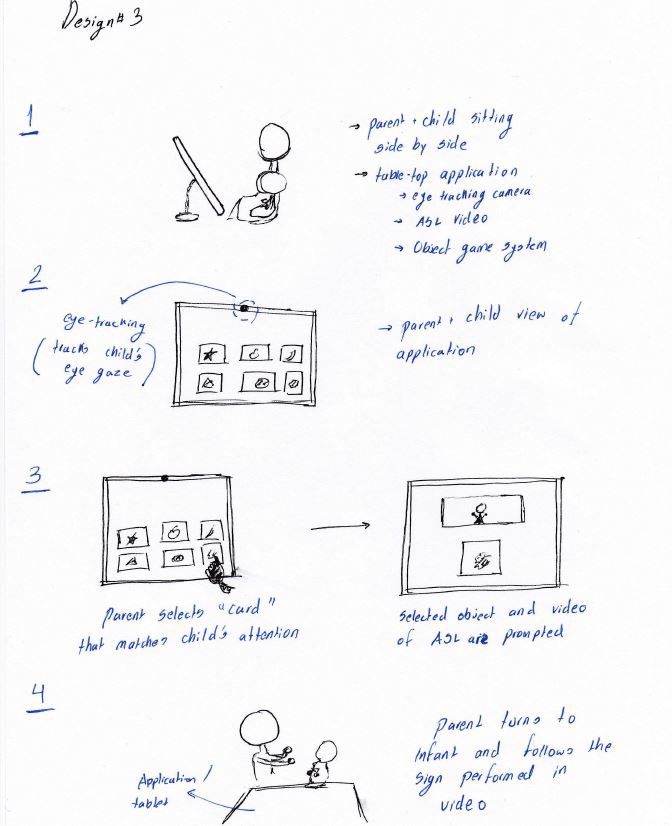

Week 5: Storyboarding 2.0
This week I developed the storyboard for the new design. Instead of using an overhead camera to track the infant's eye gaze, the design utilizes the camera located in the tablet/tabletop to track the infant's current focus of attention. The application, as seen in the storyboard, tracks which object the infant is looking at and prompts the ASL video translation of the object if the parent selects it. This feature encourages the parent to become sensitive to their child's visual focus and introduces ASL instruction without interfering in the parent-child interaction.